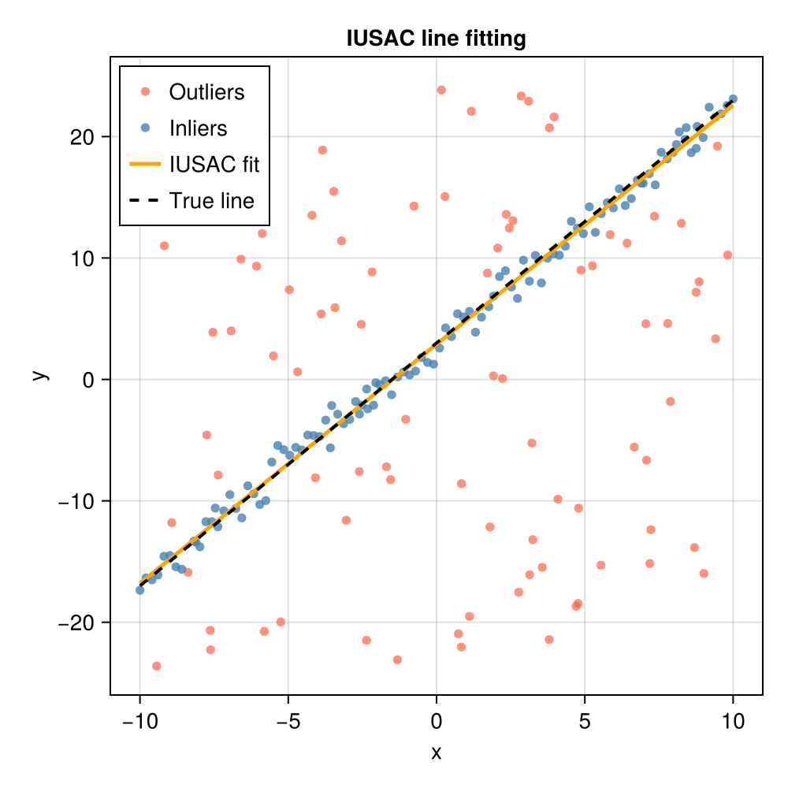

IUSAC
Background
IUSAC (Iterative Update Sample Consensus) is a repeatable variant of the RANSAC algorithm introduced by Kim et al. (2024). Like Optimal RANSAC, it addresses the fundamental non-determinism of standard RANSAC by augmenting the hypothesis-and-verify loop with an iterative update step that steers each candidate toward the globally optimal inlier set.
The key insight of IUSAC is that once an initial hypothesis is "close enough" to the true model, iteratively re-estimating the model from the full current inlier set (rather than from only the minimal sample) and rescoring against all data will cause the consensus set to grow monotonically until convergence. This is backed by a formal convergence analysis in Kim et al. (2024): when the objective function is locally quadratic around the true solution (which holds for least-squares problems under mild regularity conditions), the iterative update is equivalent to one step of Newton's method and is guaranteed to decrease the residual.
The algorithm
Given a dataset $X$ of $N$ points, a minimum sample size $s$, an inlier distance threshold $\tau_e$, a stopping threshold $\hat{\eta}$, and a convergence tolerance $\varepsilon$, our implementation of IUSAC proceeds as follows:
Initialization – outer loop — for each iteration of the outer loop, draw a random minimal sample of $s$ points and fit a candidate model $p_0$. Score it against all data to obtain the initial consensus set $C_0 = \operatorname{inlier}(X, p_0, \tau_e)$. Strategies for the initialization can vary; here we adopt a standard RANSAC approach for the initialization (see RANSAC), generating the initial hypotheses in an outer RANSAC loop with its own convergence criterion (
p). The outer RANSAC loop generates increasingly likely hypotheses for input to the inner IUSAC loop, which is necessary as the convergence of IUSAC depends on an initial hypothesis "close" to the true model.Iterative update – inner loop — starting from $C_0$, repeat:
- (a) Re-estimate the model from all current inliers: $p_k = g(C_{k-1})$.
- (b) Rescore against all data: $C_k = \operatorname{inlier}(X, p_k, \tau_e)$.
- (c) Convergence check:
- If $|C_k| < |C_{k-1}|$: set $C^* = C_{k-1}$ and stop. The consensus set has shrunk, so the previous set was better.
- If $|C_k| < (1 + \varepsilon)|C_{k-1}|$: set $C^* = C_k$ and stop. Growth has stagnated (relative increase below $\varepsilon = 0.001$); this generally only triggers when the number of inliers is high.
- Otherwise: continue with $C_{k-1} \leftarrow C_k$.
Stopping criterion – inner loop — if $|C^*| \geq \hat{\eta} N$, re-estimate $p^* = g(C^*)$ and terminate inner loop. Otherwise, repeat steps 2–3 a number of times (keyword argument
max_inner_iterations).Stopping criterion – outer loop As our outer loop is a standard RANSAC, we use the standard RANSAC stopping criterion, where the number of outer iterations $N_{out}$ is updated adaptively as
\[N = \frac{\log(1 - p)}{\log\!\left(1 - \left(\varepsilon_{\mathrm{in}}\right)^s\right)}\]
where $\varepsilon_{\mathrm{in}}$ is the current best estimate of the inlier fraction and $s$ is the minimum sample size. The algorithm also supports an explicit early-stop threshold
eta_b, which will terminate the outer loop when $\varepsilon_{\mathrm{in}} ≥ \varepsilon_b$.
Why it is repeatable
The iterative update reliably expands any "good enough" initial hypothesis to the global optimal inlier set, because re-estimating from all current inliers produces a model that is better aligned to the true structure than one fitted to only $s$ points. As long as the RANSAC-style random sampling produces at least one outer iteration whose initial consensus set overlaps sufficiently with the true inlier set, the iterative update will guide that iteration to the optimal solution. The probability of this happening increases with the number of outer trials, making IUSAC highly repeatable in practice.
When to use IUSAC
As IUSAC is essentially RANSAC with an additional inner iteration loop, the runtime is generally longer than standard RANSAC as it typically makes more calls to distfn and fittingfn per data trial. However, IUSAC may converge with fewer outer RANSAC iterations, so often it is not much more expensive than standard RANSAC. However, fittingfn must support overconstrained problems which require more computation to solve than minimally-constrained problems as expected in standard RANSAC, so calls to fittingfn may be more expensive if your dataset is large. For small problems (e.g., simple line fitting) this additional cost is often negligible and IUSAC may be preferred for its robustness and repeatibility. IUSAC may be preferrable to standard RANSAC when:
- repeatability across runs (with different random seeds) is important,
- the inlier fraction is moderate ($\sim 30\%$ or more),
fittingfnsupports overconstrained fits with more thanspoints (required for the iterative update step).
IUSAC is less suitable when:
- the model fitting step does not support over-determined inputs,
- the inlier fraction is extremely low ($\lesssim 5\%$), where the outer loop will rarely produce a good initialisation,
- multiple competing structures of similar quality are present.
API
ConsensusFitting.iusac — Function
iusac(x, fittingfn, distfn, s, t;
rng = Random.default_rng(),
degenfn = _ -> false,
verbose = false,
verbose_io = stdout,
max_data_trials = 100,
max_trials = 1000,
p = 0.99,
eta_b = 1.0,
epsilon = 0.001,
max_inner_iterations = 100)Robustly fit a model to data using the Iterative Update Sample Consensus (IUSAC) algorithm of Kim et al. (2024).
Arguments
x: Data array of size[...] × N(arbitrary dimensionality per data point is supported, but the last dimension must correspond to the number of data points). Commonly will bed × N, wheredis the dimensionality of each data point andNis the total number of data points.fittingfn: Function that fits a model to a sample of data points. Must have the signatureM = fittingfn(x). This function is called with subsets of varying size — from the minimalspoints (outer sampling step) up to the full current inlier set (iterative update step). It must therefore implement a least-squares or otherwise over-determined fit when given more thanspoints. The function should return an empty collection when it cannot produce a valid model (e.g., degenerate input). It may also return a collection of multiple candidate models; in that casedistfnis responsible for selecting the best one.distfn: Function that scores a model against all data points and returns aNamedTuple. Must have the signaturent = distfn(M, x, t), wherent.inliersis a vector of last-dimension indices intoxfor which the residual is below thresholdt(i.e., the inlier data points arex[:, :, ..., nt.inliers]) andnt.modelis the scored model. WhenMholds multiple candidate models this function should select and return only the model with the most inliers.s: Minimum number of data points required byfittingfnto fit a model (e.g., 2 for a line, 3 for a plane, 4 for a homography).t: Distance threshold below which a data point is classified as an inlier.
Keyword Arguments
rng::Random.AbstractRNG: Random number generator to use for sampling. Defaults toRandom.default_rng().degenfn: Function that tests whether a candidate minimal sample would produce a degenerate model. Must have the signaturer = degenfn(x)and returntruewhen the sample is degenerate. Defaults to_ -> false, which treats every sample as non-degenerate and leaves degeneracy detection entirely tofittingfn(which should return an empty collection for degenerate inputs).verbose::Bool: Whentrue, prints per-iteration diagnostics. Defaults tofalse.verbose_io::IO:IOstream to which verbose output is written. Defaults tostdout. Primarily useful for testing or redirecting output.max_data_trials::Integer: Maximum number of attempts to draw a non-degenerate minimal sample before emitting a warning and advancing to the next outer iteration. Defaults to100.max_trials::Integer: Hard upper bound on the number of outer IUSAC iterations. Defaults to1000.p::Real: Desired probability of drawing at least one outlier-free sample, used for the same adaptive stopping criterion as RANSAC. Defaults to0.99.eta_b::Real: Fraction of total data points that the best consensus set must reach for the algorithm to terminate early. When|C*| ≥ eta_b * Nthe algorithm stops immediately and returns the current best result. Defaults to1.0(disabled; the algorithm always runs until the adaptive stopping criterion ormax_trialsis reached).epsilon::Real: Relative convergence tolerance for the inner iterative update loop. The inner loop terminates when the consensus set grows by less than a fractionepsilonrelative to its previous size, i.e., when $|C_k| < (1 + \varepsilon)|C_{k-1}|$. Defaults to0.001.max_inner_iterations::Integer: Hard upper bound on the number of inner iterative update steps performed per outer iteration. Defaults to100.
Returns
M: The model with the greatest number of inliers found during the search.inliers: Vector of last-dimension indices ofxthat are inliers toM.
Extended Help
IUSAC augments the standard RANSAC hypothesis-and-verify loop with an inner iterative update step. Each outer iteration proceeds as follows.
Initialization (outer loop body): a minimal random sample of s points is drawn and a candidate model $p_0$ is fitted to it. The initial consensus set $C_0 = \operatorname{inlier}(X, p_0, \tau_e)$ is computed by scoring the model against all data points.
Iterative update (inner loop): starting from $C_0$ and $p_0$, the model is repeatedly re-estimated from the entire current inlier set and rescored against all data until one of two convergence conditions is met:
- $|C_k| < |C_{k-1}|$ (consensus set shrank): the previous set $C_{k-1}$ is declared optimal and the inner loop terminates.
- $|C_k| < (1 + \varepsilon)|C_{k-1}|$ (stagnated growth): the current set $C_k$ is declared optimal and the inner loop terminates.
While neither condition holds the inner loop continues, always moving toward the larger set.
Stopping criterion: if the best consensus set $C^*$ found in this outer iteration satisfies $|C^*| \geq \hat{\eta} N$ (controlled by eta_b), the algorithm terminates early. Otherwise the outer loop continues, subject to the adaptive estimate of the number of trials required (identical to the formula used by ransac) and the hard limit max_trials.
The key insight of IUSAC is that the iterative update — re-estimating the model from the full current inlier set rather than from only s points — drives the solution toward the global optimum as long as the initial hypothesis is close enough to the true model. This makes the algorithm notably more repeatable than standard RANSAC while adding only modest overhead per outer iteration.
References
Example: fitting a line in the presence of outliers
The following example generates 100 inlier points near the line $y = 2x + 3$, adds 100 outliers scattered over a wider region, and uses IUSAC to recover the true parameters.
using ConsensusFitting
using Random
using CairoMakie
Random.seed!(42)
# ── Generate synthetic data ────────────────────────────────────────────────
a_true, b_true = 2.0, 3.0
n_inliers = 100
n_outliers = 100
x_in = collect(range(-10.0, 10.0; length=n_inliers))
y_in = a_true .* x_in .+ b_true .+ randn(n_inliers)
x_out = -10.0 .+ 20.0 .* rand(n_outliers)
y_out = -25.0 .+ 50.0 .* rand(n_outliers)
# Pack into a 2 × N matrix (each column is one data point [x; y])
data = [vcat(x_in, x_out)'; vcat(y_in, y_out)']
# ── Define the fitting and distance functions ──────────────────────────────
# Fit a line y = a*x + b through ≥ 2 points.
function fit_line(pts)
n = size(pts, 2)
n < 2 && return []
if n == 2
# Minimally constrained: two-point exact fit
x1, y1 = pts[1, 1], pts[2, 1]
x2, y2 = pts[1, 2], pts[2, 2]
isapprox(x1, x2; atol=1e-10) && return [] # vertical line → degenerate
a = (y2 - y1) / (x2 - x1)
b = y1 - a * x1
return [a, b]
else
# Over-constrained: least-squares fit (required for iterative update)
A = hcat(pts[1, :], ones(n))
b = pts[2, :]
coef = A \ b
return [coef[1], coef[2]]
end
end
# Classify points using their vertical (y-direction) residual.
function line_dist(M, x, t)
a, b = M[1], M[2]
resid = abs.(x[2, :] .- (a .* x[1, :] .+ b))
inliers = findall(resid .< t)
return (model=M, inliers=inliers)
end
# ── Run IUSAC ──────────────────────────────────────────────────────────────
M, inliers = iusac(data, fit_line, line_dist, 2, 2.0)
println("Recovered slope: ", round(M[1]; digits=4), " (true: $a_true)")
println("Recovered intercept: ", round(M[2]; digits=4), " (true: $b_true)")
println("Inliers identified: ", length(inliers), " / $(size(data, 2))")Recovered slope: 1.9685 (true: 2.0)
Recovered intercept: 2.8938 (true: 3.0)
Inliers identified: 109 / 200Visualising the result
outlier_mask = trues(size(data, 2))
outlier_mask[inliers] .= false
fig = Figure(size=(500, 500))
ax = Axis(fig[1, 1];
xlabel="x", ylabel="y",
title="IUSAC line fitting")
# All data points
scatter!(ax, data[1, outlier_mask], data[2, outlier_mask];
color=(:tomato, 0.7), markersize=8, label="Outliers")
scatter!(ax, data[1, inliers], data[2, inliers];
color=(:steelblue, 0.8), markersize=8, label="Inliers")
# True and recovered lines
x_plot = range(-10.0, 10.0; length=200)
lines!(ax, x_plot, M[1] .* x_plot .+ M[2];
color=:orange, linewidth=2.5, label="IUSAC fit")
lines!(ax, x_plot, a_true .* x_plot .+ b_true;
color=:black, linewidth=2, linestyle=:dash, label="True line")
axislegend(ax; position=:lt)
fig
Because the iterative update re-estimates the model when the list of inliers is expanded, M already represents the fit to the identified inlier set and no separate "finalizer" step is needed. Here we will just redo the fit with the inliers to additionally estimate parameter uncertainties. You will see that the best-fit values found μ are the same as what was output in M above.
using LinearAlgebra: dot
"""
fit_line_overconstrained(data)
Fit a line y = a + b*x to data given as a 2×N matrix:
data[1, :] = x
data[2, :] = y
# Returns
- `θ` :[a, b] (slope, intercept)
- `Σθ`: covariance matrix of θ (2×2)
- `σ²`: estimated residual variance
"""
function fit_line_overconstrained(data)
@assert size(data, 1) == 2 "Input must be a 2×N matrix"
x = view(data, 1, :)
y = view(data, 2, :)
N = length(x)
@assert N ≥ 2 "Need at least two points"
A = hcat(x, ones(N))
θ = A \ y
r = y - A * θ
dof = N - 2
@assert dof > 0 "Need more than 2 points for covariance estimate"
σ² = dot(r, r) / dof
Σθ = σ² * inv(A' * A)
return θ, Σθ, σ²
end
μ, Σθ, σ² = fit_line_overconstrained(data[:, inliers])
println("Recovered slope: ", round(μ[1]; digits=4), " ± ", round(sqrt(Σθ[1,1]); digits=4), " (true: $a_true)")
println("Recovered intercept: ", round(μ[2]; digits=4), " ± ", round(sqrt(Σθ[2,2]); digits=4), " (true: $b_true)")
println("M == μ: ", M == μ)Recovered slope: 1.9685 ± 0.0148 (true: 2.0)
Recovered intercept: 2.8938 ± 0.0866 (true: 3.0)
M == μ: trueReferences
This page cites the following references:
- Kim, J.; Lee, B.; Zanetti, M. R.; Miller, K. A. and Kim, S. (2024). Iterative Update Sample Consensus (IUSAC): A repeatable algorithm for optimal consensus set. Journal of Computational and Applied Mathematics 436, 115423.